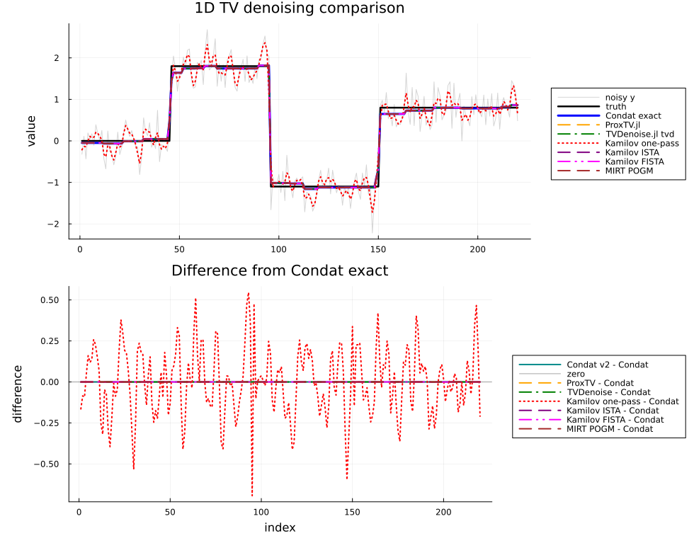

1D TV Denoising
This example compares the current 1D methods:
- Condat v1 direct solver;
- Condat v2 direct solver;
- ProxTV.jl reference solver;
- TVDenoise.jl sparse ADMM solver;
- weighted Kamilov one-pass shrinkage;
- weighted Kamilov ISTA/FISTA diagnostics;
- MIRT POGM with gradient restart.
The Kamilov one-pass method is included as an experiment. It currently does not match Condat exactly. Kamilov's equations (18a)-(18b) are shown here as ISTA, and FISTA applies the standard accelerated momentum to the same proximal step.
using BenchmarkTools
using LinearAlgebra
using Plots
using ProxTV
using Random
using TVDenoise
using TVDenoising
┌ Warning: Runtime invalidation was disabled, but the CPU info is out-of-date.
│ Will continue with incorrect CPU name (from build time).
└ @ HostCPUFeatures ~/.julia/packages/HostCPUFeatures/ZTXz4/src/cpu_info.jl:71
Helper functions
function proxtv_1d(y, λ)
h = NormTVp(λ, 1.0, length(y))
x = similar(y, Float64)
prox!(x, h, y, 1.0)
return x
end
rmse(x, xtrue) = norm(x - xtrue) / sqrt(length(x))
tv1_value(x) = sum(abs.(diff(x)));Build a piecewise-constant test signal
Random.seed!(2026)
N = 220
xtrue = vcat(
fill(0.0, 45),
fill(1.8, 50),
fill(-1.1, 55),
fill(0.8, 70),
)
y = xtrue + 0.35 * randn(N)
λ = 1.0;Run methods
x_condat_v1 = similar(y)
x_condat_v2 = similar(y)
x_kamilov = similar(y)
a = similar(y)
d = similar(y)
γ_ista = 0.0000317
γ_fista = 0.00001
pogm_L = 100000.0
pogm_maxiter = 10_000
tv1d_condat_v1!(x_condat_v1, y, λ)
tv1d_condat_v2!(x_condat_v2, y, λ)
tv1d_kamilov_onepass!(x_kamilov, y, λ, a, d)
x_ista = tv1d_kamilov_ista(y, λ; γ=γ_ista, maxiter=200000)
x_fista = tv1d_kamilov_fista(y, λ; γ=γ_fista, maxiter=20000)
x_pogm = tv1d_kamilov_pogm(y, λ; L=pogm_L, maxiter=pogm_maxiter)
x_proxtv = proxtv_1d(y, λ)
ρ_tvd = 5.0
x_tvd, hist_tvd = tvd(y, λ, ρ_tvd; maxit=10000, tol=1e-8, verbose=false)
results = [
("Condat v2", norm(x_condat_v2 - x_condat_v1, Inf), rmse(x_condat_v2, xtrue), tv1_value(x_condat_v2)),
("ProxTV", norm(x_proxtv - x_condat_v1, Inf), rmse(x_proxtv, xtrue), tv1_value(x_proxtv)),
("TVDenoise.jl tvd", norm(x_tvd - x_condat_v1, Inf), rmse(x_tvd, xtrue), tv1_value(x_tvd)),
("Kamilov one-pass", norm(x_kamilov - x_condat_v1, Inf), rmse(x_kamilov, xtrue), tv1_value(x_kamilov)),
("Kamilov ISTA", norm(x_ista - x_condat_v1, Inf), rmse(x_ista, xtrue), tv1_value(x_ista)),
("Kamilov FISTA", norm(x_fista - x_condat_v1, Inf), rmse(x_fista, xtrue), tv1_value(x_fista)),
("MIRT POGM", norm(x_pogm - x_condat_v1, Inf), rmse(x_pogm, xtrue), tv1_value(x_pogm)),
]
for (name, err, r, tv) in results
println(rpad(name, 18), " ||x-Condat||∞ = ", err, " RMSE = ", r, " TV = ", tv)
end
println("TVDenoise.jl tvd iterations = ", hist_tvd.k, ", ρ = ", ρ_tvd)
println("Kamilov ISTA γ = ", γ_ista, ", maxiter = 200000")
println("Kamilov FISTA γ = ", γ_fista, ", maxiter = 20000")
println("MIRT POGM L = ", pogm_L, ", maxiter = ", pogm_maxiter)Condat v2 ||x-Condat||∞ = 1.1102230246251565e-15 RMSE = 0.08069495087595203 TV = 7.049041747477735
ProxTV ||x-Condat||∞ = 2.220446049250313e-16 RMSE = 0.08069495087595198 TV = 7.049041747477727
TVDenoise.jl tvd ||x-Condat||∞ = 1.056153499989776e-6 RMSE = 0.08069500965990471 TV = 7.04904353673056
Kamilov one-pass ||x-Condat||∞ = 0.6936854570208262 RMSE = 0.235229499687254 TV = 36.24946024789661
Kamilov ISTA ||x-Condat||∞ = 0.000673866843181381 RMSE = 0.08073997970659563 TV = 7.058916043299575
Kamilov FISTA ||x-Condat||∞ = 0.0006534998034120054 RMSE = 0.08066004208082812 TV = 7.050092352437128
MIRT POGM ||x-Condat||∞ = 0.00048513597954380483 RMSE = 0.08069363165100997 TV = 7.052454959534834
TVDenoise.jl tvd iterations = 191, ρ = 5.0
Kamilov ISTA γ = 3.17e-5, maxiter = 200000
Kamilov FISTA γ = 1.0e-5, maxiter = 20000
MIRT POGM L = 100000.0, maxiter = 10000
ISTA/FISTA implementation benchmark
This benchmark uses a fixed iteration count and preallocated workspace. It measures implementation cost only; FISTA can need fewer iterations for a comparable error level.
bench_iters = 10_000
bench_γ = 1.0e-5
x_ista_b = similar(y)
a_ista_b = similar(y)
d_ista_b = similar(y)
z_ista_b = similar(y)
xprev_ista_b = similar(y)
x_fista_b = similar(y)
a_fista_b = similar(y)
d_fista_b = similar(y)
z_fista_b = similar(y)
xprev_fista_b = similar(y)
q_fista_b = similar(y)
qprev_fista_b = similar(y)
x_pogm_b = similar(y)
bench_ista = @benchmark tv1d_kamilov_ista!(
$x_ista_b, $y, $λ, $a_ista_b, $d_ista_b, $z_ista_b, $xprev_ista_b;
γ=$bench_γ, maxiter=$bench_iters,
) seconds=0.2 samples=20 evals=1
bench_fista = @benchmark tv1d_kamilov_fista!(
$x_fista_b, $y, $λ, $a_fista_b, $d_fista_b, $z_fista_b, $xprev_fista_b,
$q_fista_b, $qprev_fista_b;
γ=$bench_γ, maxiter=$bench_iters,
) seconds=0.2 samples=20 evals=1
bench_pogm = @benchmark tv1d_kamilov_pogm!(
$x_pogm_b, $y, $λ;
L=$pogm_L, maxiter=$bench_iters,
) seconds=0.2 samples=20 evals=1
for (name, b) in (("ISTA", bench_ista), ("FISTA", bench_fista), ("POGM", bench_pogm))
t_ms = median(b).time / 1e6
mem = median(b).memory
allocs = median(b).allocs
println(rpad(name, 8), " median time = ", round(t_ms; digits=3),
" ms, memory = ", mem, " bytes, allocations = ", allocs)
endISTA median time = 2.899 ms, memory = 0 bytes, allocations = 0
FISTA median time = 3.5 ms, memory = 0 bytes, allocations = 0
POGM median time = 120.011 ms, memory = 444081464 bytes, allocations = 619663
Plot the comparison
p_signal = plot(
y;
label="noisy y",
color=:gray70,
alpha=0.55,
linewidth=1,
title="1D TV denoising comparison",
ylabel="value",
legend=:outerright,
)
plot!(p_signal, xtrue; label="truth", color=:black, linewidth=2.5)
plot!(p_signal, x_condat_v1; label="Condat exact", color=:blue, linewidth=3)
plot!(p_signal, x_proxtv; label="ProxTV.jl", color=:orange, linewidth=2, linestyle=:dash)
plot!(p_signal, x_tvd; label="TVDenoise.jl tvd", color=:green, linewidth=2, linestyle=:dashdot)
plot!(p_signal, x_kamilov; label="Kamilov one-pass", color=:red, linewidth=2, linestyle=:dot)
plot!(p_signal, x_ista; label="Kamilov ISTA", color=:purple, linewidth=2, linestyle=:dash)
plot!(p_signal, x_fista; label="Kamilov FISTA", color=:magenta, linewidth=2, linestyle=:dashdotdot)
plot!(p_signal, x_pogm; label="MIRT POGM", color=:brown, linewidth=2, linestyle=:dash)
p_error = plot(
x_condat_v2 .- x_condat_v1;
label="Condat v2 - Condat",
color=:cyan4,
linewidth=2,
title="Difference from Condat exact",
xlabel="index",
ylabel="difference",
legend=:outerright,
)
hline!(p_error, [0.0]; label="zero", color=:black, linewidth=1, alpha=0.35)
plot!(p_error, x_proxtv .- x_condat_v1; label="ProxTV - Condat", color=:orange, linewidth=2, linestyle=:dash)
plot!(p_error, x_tvd .- x_condat_v1; label="TVDenoise - Condat", color=:green, linewidth=2, linestyle=:dashdot)
plot!(p_error, x_kamilov .- x_condat_v1; label="Kamilov one-pass - Condat", color=:red, linewidth=2, linestyle=:dot)
plot!(p_error, x_ista .- x_condat_v1; label="Kamilov ISTA - Condat", color=:purple, linewidth=2, linestyle=:dash)
plot!(p_error, x_fista .- x_condat_v1; label="Kamilov FISTA - Condat", color=:magenta, linewidth=2, linestyle=:dashdotdot)
plot!(p_error, x_pogm .- x_condat_v1; label="MIRT POGM - Condat", color=:brown, linewidth=2, linestyle=:dash)
p = plot(p_signal, p_error; layout=(2, 1), size=(980, 760), left_margin=6Plots.mm);
